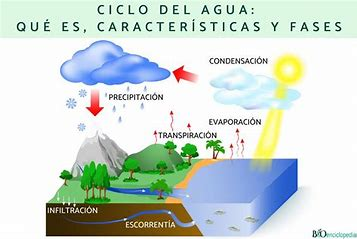

Ciclo del agua
El ciclo del agua, también conocido como ciclo hidrológico, es el proceso natural mediante el cual el agua circula a través de la atmósfera, la superficie terrestre y los océanos. Este ciclo es fundamental para mantener la vida en el planeta y regular el clima.
Fases del Ciclo del Agua
El ciclo del agua tiene varias etapas clave que permiten que el agua se mueva constantemente. Estas fases son las siguientes:
- Evaporación: El agua de ríos, lagos, océanos y otros cuerpos de agua se calienta por el sol y se convierte en vapor de agua, ascendiendo hacia la atmósfera.
- Transpiración: Las plantas también contribuyen a la evaporación a través de un proceso llamado transpiración, donde el agua es absorbida por las raíces y liberada como vapor a través de las hojas.
- Condensación: El vapor de agua se enfría en la atmósfera, formando pequeñas gotas que se agrupan y forman nubes.
- Precipitación: Cuando las nubes se llenan de agua, las gotas se hacen más grandes y caen hacia la Tierra en forma de lluvia, nieve, granizo o llovizna.
- Infiltración: Parte del agua que cae sobre la Tierra se infiltra en el suelo, donde es absorbida por las plantas o se acumula en los acuíferos subterráneos.
- Escorrentía: El agua que no se infiltra en el suelo fluye sobre la superficie terrestre hacia ríos, lagos y océanos.

El Rol del Sol en el Ciclo del Agua
El sol es el principal motor del ciclo del agua. Su energía calienta el agua en la superficie terrestre, iniciando el proceso de evaporación. Sin la energía solar, este ciclo no podría ocurrir, lo que afectaría gravemente al clima y a los ecosistemas.
Importancia del Ciclo del Agua
El ciclo del agua es vital por varias razones:
- Regulación del clima: El agua ayuda a regular la temperatura de la Tierra. La evaporación y la precipitación distribuyen el calor y la humedad en todo el planeta.
- Fuente de agua dulce: A través de la precipitación y la infiltración, se recargan los acuíferos subterráneos y las reservas de agua potable.
- Soporte para la vida: Las plantas, animales y seres humanos dependen del agua para sobrevivir. Sin un ciclo de agua saludable, la vida en la Tierra sería insostenible.
- Conservación de los ecosistemas: El agua es esencial para el mantenimiento de los hábitats naturales, como bosques, humedales y océanos.
El Impacto del Cambio Climático en el Ciclo del Agua
El cambio climático está alterando el ciclo del agua en diversas formas:
- Aumento de la evaporación: Las temperaturas más altas aumentan la tasa de evaporación, lo que puede provocar sequías más intensas.
- Cambio en los patrones de precipitación: Algunas regiones experimentan más lluvias, mientras que otras sufren sequías más largas.
- Desglaciación: El derretimiento de los glaciares debido al calor excesivo aumenta el nivel del mar y cambia el flujo de los ríos.
Es importante tomar medidas para mitigar el cambio climático y proteger los recursos hídricos. Solo así podremos garantizar un ciclo del agua saludable para las futuras generaciones.
¡Recuerda! El agua es un recurso limitado y debemos preservarlo para las generaciones futuras.